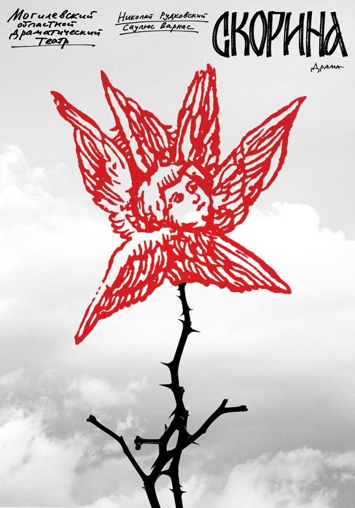
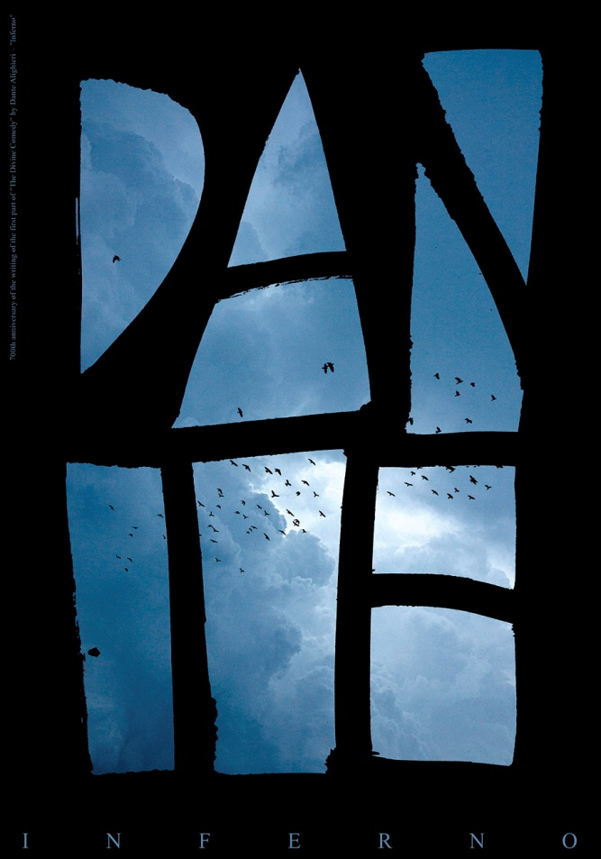
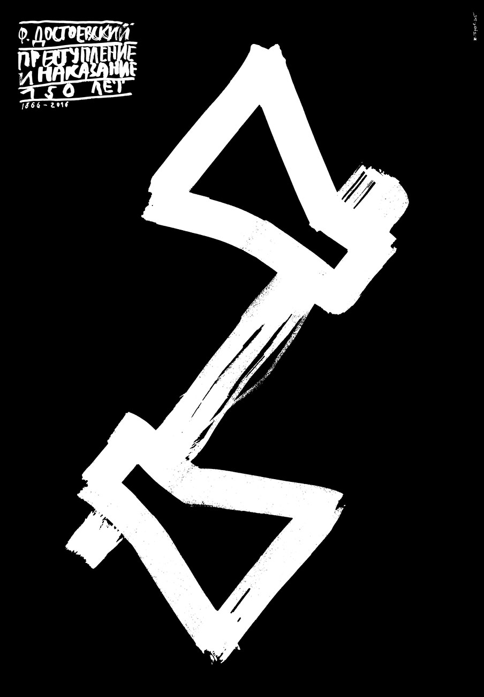
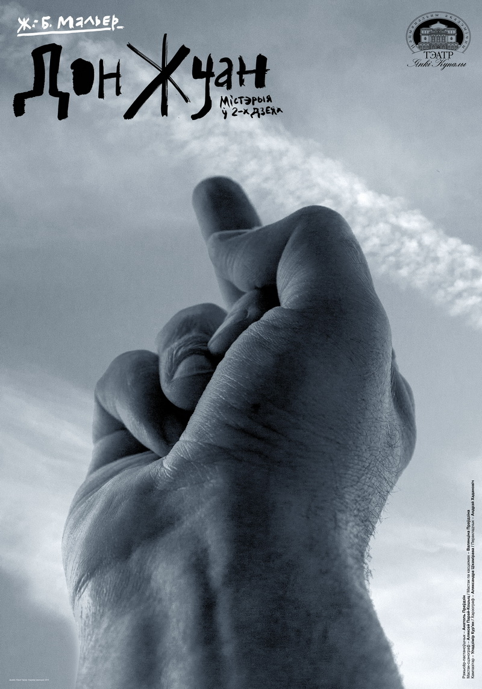
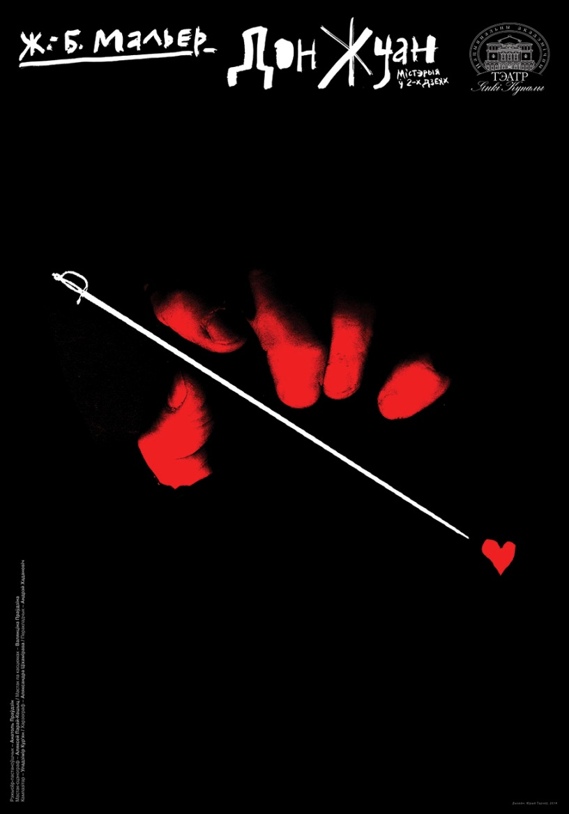
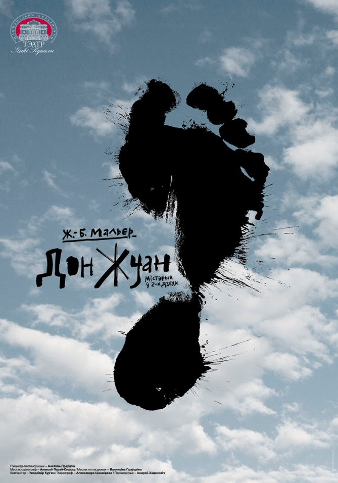
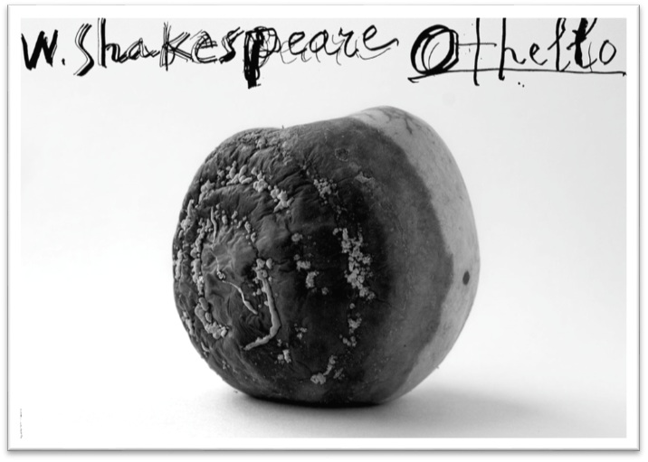
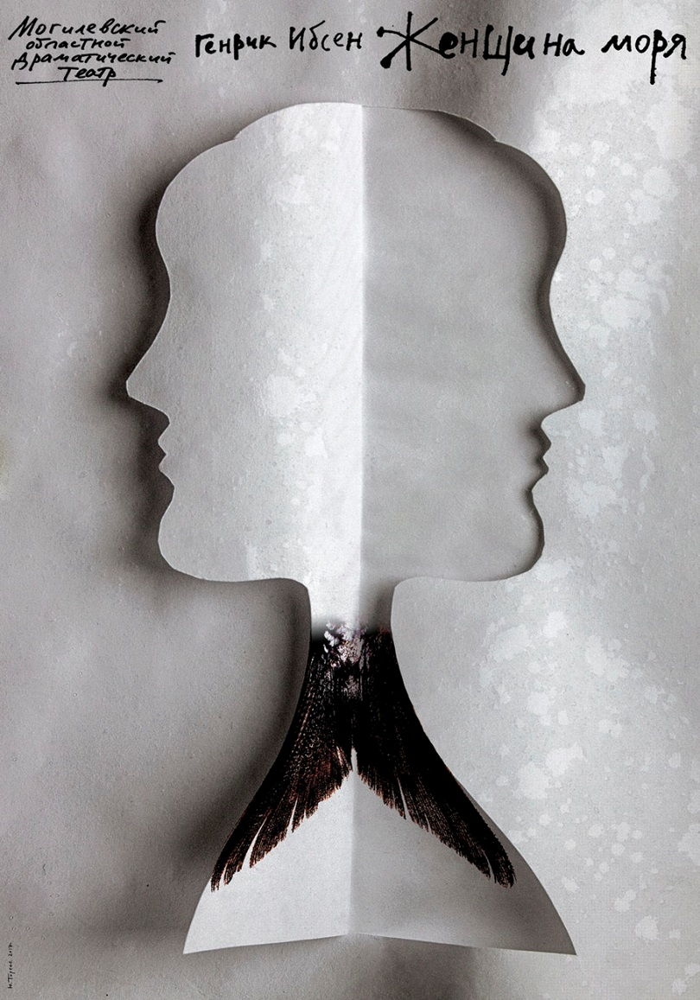
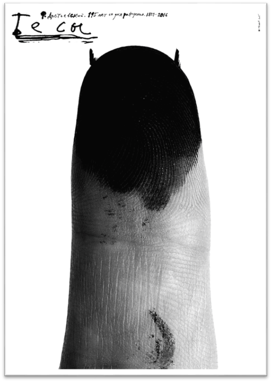
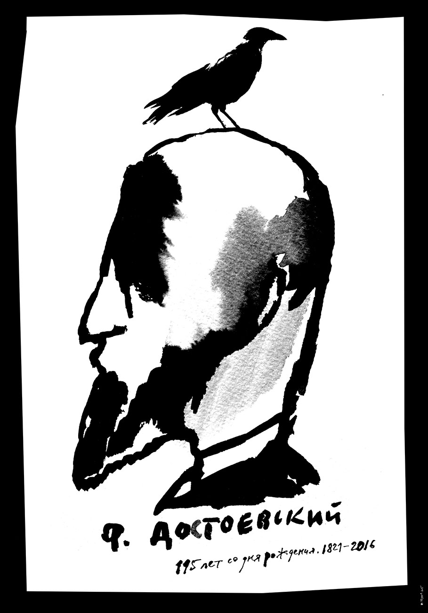

В этом разделе речь идёт о рекламных плакатах Юрия Тореева к спектаклям белорусских театров – преимущественно классического репертуара. В этих работах мы видим все отличительные особенности творчества Художника: оригинальность прочтения темы, лаконизм композиционного решения, психологическая убедительность образа, мастерское владение шрифтом.
Скорина (драма)
На плакате изображён Шестикрылый серафим – служитель и посланник христианского Бога-Отца. Тот самый, который вдохновляет избранные человеческие души на высшее служение: глаголом жечь сердца людей. Внушать им безграничную веру в Священное Писание и подкреплять силы для служения делу Иисуса Христа.
Франциск Скорина – живое воплощение ревностного исполнителя воли Божией – просвещать русичей, литвинов и белорусов, открывать им сокровища Слова Божия, и тем просвещать их тёмные языческие души. Скорина – первопечатник Библии на Руси. В Праге, а затем в Вильне он издал первую печатную белорусскую книгу «Псалтырь» и 23 книги Библии (1517 – 1525 гг.)
Подобно шестикрылому серафиму, Франциск Скорина открыл глаза славянским народам на высшие духовные ценности, просветил их души. Однако, прекрасный серафим насажен, как роза, на колючую чёрную ветку с острыми шипами. Это значит, что путь подвижника Просвещения был усеян шипами бедствий и происков врагов.
Католическая и православная церкви не признавали книги Скорины, поскольку он нарушал запрет на самостоятельный перевод Библии. В Москве его книги были сожжены «за латинство» (почти то же, что «вольнодумство»); в 1534 году Скорину изгнали из Великого княжества Московского как католика. Пришлось ему испытывать нужду из-за потери спонсоров (своих доходов он, конечно, не имел). Пришлось и сидеть в тюрьме несколько месяцев за долги умершего брата (1529 г.) Под конец жизни Франциск работал в Праге врачом в частном доме. Были у него и проблемы в личной жизни (о чём повествует драма «Скорина» в Могилёвском областном драматическом театре).
Плакат Юрия Тореева говорит о главном: Скорина – святой и мученик, достойный вечной памяти.
DANTE 2015 (Inferno)
Великое имя заполняет всю площадь плаката.
Буквы изваяны из вечного материала, которому не суждено быть разрушенному, пока жива Земля. Чёрные буквы – это решётка, покрывающая выход из ада, где отбывают вечное наказание грешники. С тоской они смотрят на небо, такое бездонное и синее, где летают стаи птиц, своим свободным полётом напоминающие узникам ада о том, что они утратили навсегда. Птицы! Не бередите душевные раны несчастных узников!
Надпись на плакате своим классически-строгим начертанием подтверждает незыблемость закона: преступник будет наказан. Добавим: если не человеческим судом, то Божьим.
Та же мысль выражена в плакате.
«Ф.Достоевский. Преступление и наказание. 150 лет»
Предельно простой рисунок выражает не слишком простую мысль: преступление необходимо влечёт за собой наказание. По существу, это философская проблема, которая решается различно в зависимости от множества факторов. Для того и существует не только гражданский, но и Божий суд. Оба они функционируют и делают своё дело, но оба не застрахованы от ошибок. Пусть плакат Юрия Тореева заставляет людей (и особенно молодых) критически относиться к собственным мыслям, намерениям и поступкам.
Дон Жуан (Ж.-Б.Мольер)
На плакате – фотография мускулистой и волосатой мужской руки с пальцами, сложенными в непристойный жест. Впрочем, ракурс фото показывает это не слишком откровенно. Зрителю без слов ясно, что речь идёт о мужчине сильном, независимом, привыкшем побеждать (в основном, женщин). Мощная рука Дона высится на фоне неба, как монумент в честь мужской силы (щедро расточаемой).
Юрий Тореев нашёл верный приём, как показать в этом явлении («жуанизме») нечто непристойное, мерзкое и отвратительное: гордая рука-статуя лишена всякой красоты или гармонии. Пальцы сбились в бесформенный комок, их свела судорога. Здесь зритель видит ясно, что любимое занятие Дон Жуана – мерзость и жестокость.
Дон Жуан (2)
Второй плакат – это приговор знаменитому соблазнителю. Он – убийца, кровавый и беспощадный. Его острая шпага безжалостно пронзает женские сердца; его мощная рука – по локоть в крови. Мы догадываемся об этом, хотя из мрака его злодеяний виднеются только пальцы.
Дон Жуан (3)
Третий плакат подводит итог мыслям и чувствам, выраженным в первых двух. Знаменитый герой Мольера – не только развратник, но и кощунник. Своими «подвигами» он попирает всё святое, он оскверняет самое Небо.
Отелло (Шекспир) [трагедия обманутого доверия]
Надпись на плакате предупреждает нас – в трагедии Шекспира речь пойдёт о мире, достойном названия «империя зла», и о людях, недостойных имени Человека (за редкими исключениями). В этой надписи уже скрываются начала всех пороков – объектов беспощадной критики драматурга: беззаконие и безумие, преступный произвол, омерзительное безобразие – словом, все грехи, которыми может грешить надпись, сделанная человеческой рукой. Фотография на плакате информирует нас о том, что мир людей-антигероев Шекспира насквозь прогнил, подобно этому несчастному яблоку. Все герои, за исключением Дездемоны, поражены какой-либо порчей. Яго – гнусный интриган, убийца и злодей, циник и женоненавистник. Кассио – безвольный и малодушный глупец и трус, игрушка в руках преступника Яго. Эмилия – двуличная воровка, снабдившая злодея Яго «вещественным доказательством» мнимого преступления Дездемоны. Брабанцио – отец Дездемоны – тёмный глупец, верящий в колдовские чары.
В критической литературе о трагедии Шекспира не принято упрекать в чём-либо главного героя – Отелло. Но читателю (зрителю) трагедии ясно: этот благородный герой наивен, как дитя. Он доверяет всей лжи негодяя Яго, хотя мог бы и распознать его истинную суть и не верить его клеветническим наветам. Всё же Отелло был не мальчик, он знал людей, пожил и повоевал. Видимо, он был чужд христианской веры и не знал, что Иисус Христос простил Марию Магдалину.
Кстати, другой мудрый знаток человеческих душ, описывая подобную ситуацию – когда жених узнаёт о прошлых связях невесты – уходит от неё и от мира в монастырь, но не бросается её душить (Отец Сергий). «Прощайте, и прощены будете» - вот заповедь Иисуса Христа (Лк. 6:37). Отелло тоже согрешил, тоже запятнал себя убийством невинной жертвы. Чистой от греха осталась в трагедии «Отелло» одна Дездемона. Не слишком много…
Генрик Ибсен. Женщина моря.
Лаконичный и информативный плакат интригует потенциального зрителя: на нём изображён женский профиль в двух проекциях: чёрный на белом фоне и белый на чёрном фоне. Ясно, что героиня пьесы переживает некое раздвоение личности; она поставлена перед необходимостью принять решение – выбрать одного мужчину из двух кандидатов в мужья. Задача трудная: вспомним печальную судьбу Буриданова осла, которому предложили на выбор два стога сена. Бедняга умер с голоду, так как неспособен был выбрать.
В пьесе Г.Ибсена героиня оказывается на высоте: она отдаёт предпочтение мужу, хотя старая первая любовь не совсем забыта. Такое решение даётся ей нелегко; она колеблется, как морская волна, то в одну сторону, то в другую – ведь она – Женщина моря. В её природе заложено нечто от жителей моря – рыб, которые не знают парного брака и тесных контактов особей разного пола.
Художник довершает характеристику героини пьесы, придав ей рыбий хвост: он выглядит здесь, как изящная деталь женского костюма.
Бесы (2015) По роману Ф.Достоевского
Этот плакат – самый страшный среди страшных, самый сильный среди сильных работ Ю.Тореева. Казалось бы – чего проще: изображён палец, стоящий вертикально. Но сколько в нём жутких смыслов:
Он указывает вам путь: якобы к «всеобщему добру», а на самом деле – к гибели, к всесокрушающей народной революции, истреблению государства и классов.
Он угрожает вам, предупреждая: «Наше дело – страшное, полное, повсеместное и беспощадное разрушение».
Он – посланец и слуга диавола: вместо лица у него сплошное чёрное пятно – цвета зла и смерти, а на голове торчат небольшие, но очень острые рожки.
Он – воплощение бесстыдства; у него нет ничего святого; он не считает нужным прикрыть свой срам – ведь он принадлежит не к обществу людей, но к своре бесов, которые не знают стыда.
Он – обманщик и губитель. Поверив ему, вы станете такими же одинокими (как перст) изгоями, обречёнными на позорную гибель. Всё это выражает плакат Юрия Тореева. Надпись на плакате, выполненная небрежным и якобы малограмотным шрифтом, добавляет к сказанному: чёрное дело бесов безнадежно, они погубят сами себя.
Ф.Достоевский. 115 лет со дня рождения
- «Ворон старый не каркнет даром» (Русская пословица)
-
«Что хотел сказать тем словом
Ворон, вещий с давних пор,
Что пророчил мне угрюмо Ворон,
Вещий с давних пор,
Хриплым карком: “Nevermore”…»
(Эдгар Алан По)
На голове Достоевского сидит ворон.
Что-то общее есть у этой птицы с человеком, на голове которого она уселась.
Символика ворона бесконечно богата и разнообразна. Эта птица почиталась священной у разных народов и в разные времена. В наше время ей приписывают самые серьёзные значения: мудрость, долголетие, одиночество, тайное знание. Не напрасно выбрала вещая птица голову Достоевского местом для себя. Этот человек мудр – не менее, чем птица, живущая 300 лет; его труды переживут века, подобно трудам Гомера, Вергилия, Горация…Он обладает тайным знанием, позволяющим заглянуть в души людей и читать в них, как в открытых книгах. И так же, как Ворон, этот человек был одинок среди людей, подобно великану среди лилипутов.
Портрет великого писателя на плакате Ю.Тореева подтверждает общность его с образом ворона в народной молве и добавляет некоторые значения более древнего происхождения, чем современные. Черты лица великого писателя обозначены не-чётко; вместо подробностей и деталей мы видим почти бесформенные чёрные пятна, покрывающие лицо и затылок; они резко контрастируют с белыми пятнами. Вся эта сложная картина звучит, как резкое карканье птицы – ворона, пророчащее беду:
-
«Вещает иго злых татар,
Вещает казней ряд кровавых,
И трус, и голод, и пожар,
Злодеев силу, гибель правых…»
(А.Блок)
Это стихотворение написано о птице Гамаюн, но так же приложимо к птице Ворону, точнее, к её фантастическому образу, созданному народом. Плакат Ю.Тореева интригует зрителя и возбуждает в нём желание поближе познакомиться с произведениями великого писателя и оценить всю их глубокую мудрость и могучий реализм, обеспечивающий им жизнь гораздо более продолжительную, чем воронам.
Л. Миронова,
25.03.2018